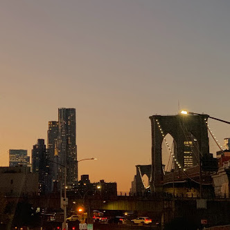

The Boroughs of New York
The Brooklyn Bridge
Brooklyn
Brooklyn (Kings County), on the western tip of Long Island, is the city's most populous borough. Brooklyn is known for its cultural, social, and ethnic diversity, an independent art scene, distinct neighborhoods, and a distinctive architectural heritage.

Empire State Building
Manhattan
Manhattan (New York County) is the geographically smallest and most densely populated borough. It is home to Central Park and most of the city's skyscrapers, and is sometimes locally known as The City.
Citi Field
Queens
Queens (Queens County), on Long Island north and east of Brooklyn, is geographically the largest borough, the most ethnically diverse county in the United States, and the most ethnically diverse urban area in the world.
LEARN MORE ON GEOGRAPHYYankee Stadium
The Bronx
The Bronx (Bronx County) is both New York City's northernmost borough, and the only one that is mostly on the mainland. It is the location of Yankee Stadium, the baseball park of the New York Yankees, and home to the largest cooperatively-owned housing complex in the United States, Co-op City.
View from Staten Island Ferry
Staten Island
Staten Island (Richmond County) is the most suburban in character of the five boroughs. It is connected to Brooklyn by the Verrazzano-Narrows Bridge, and to Manhattan by way of the free Staten Island Ferry.